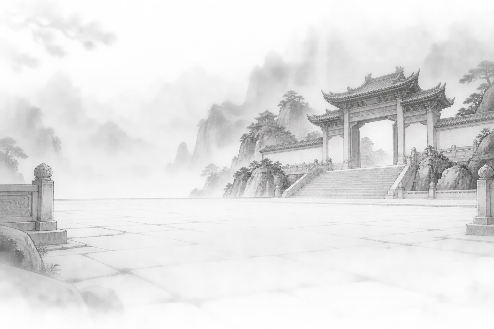
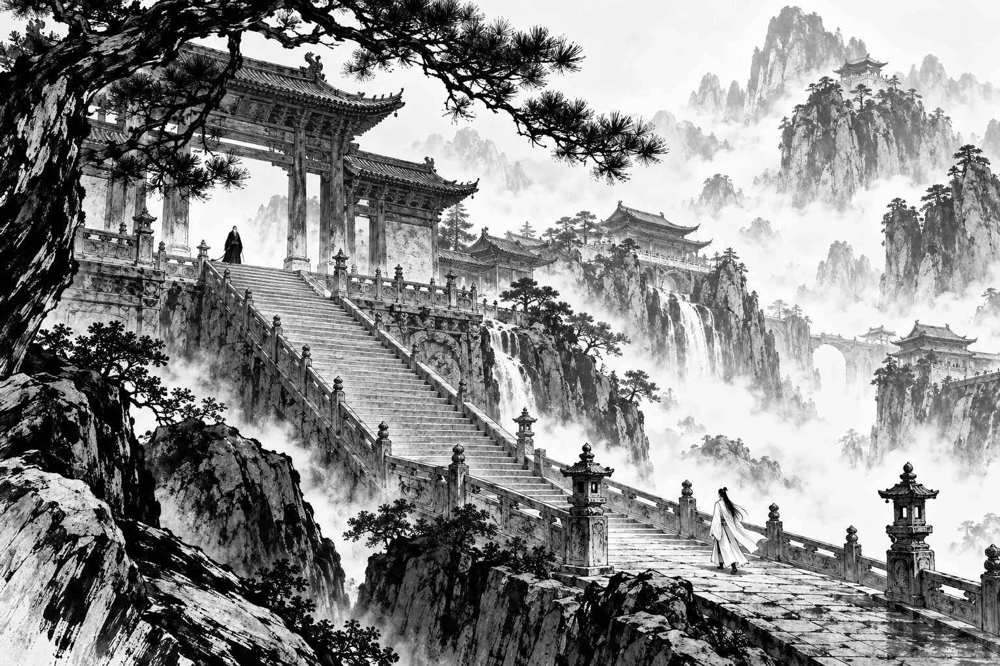
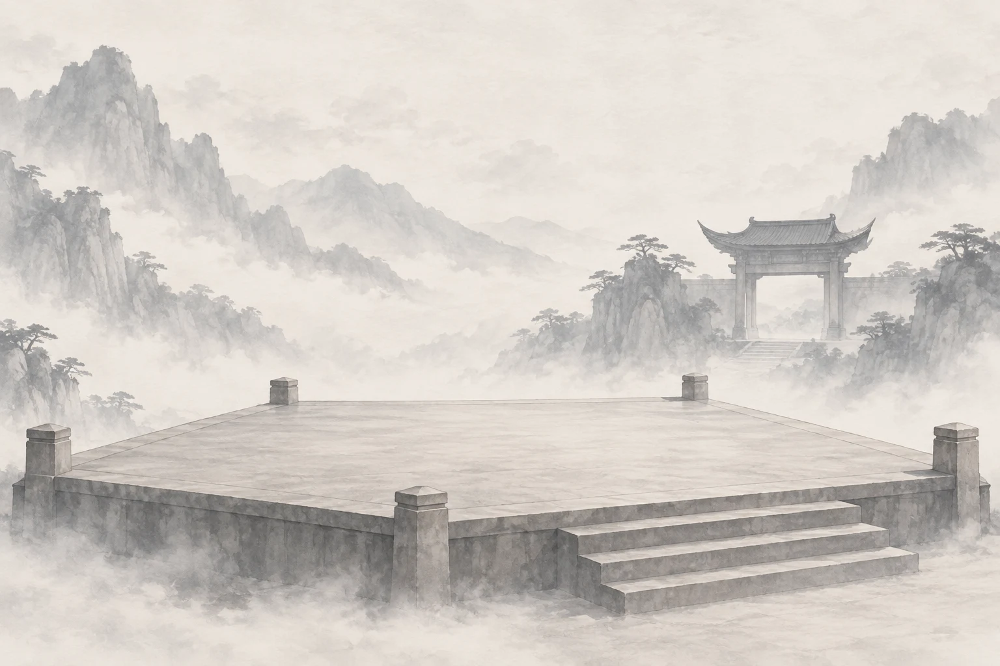
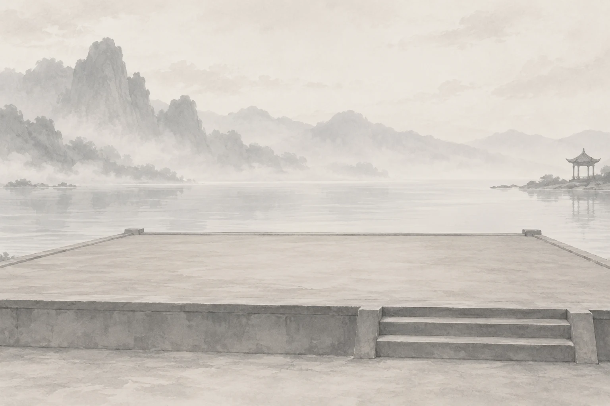
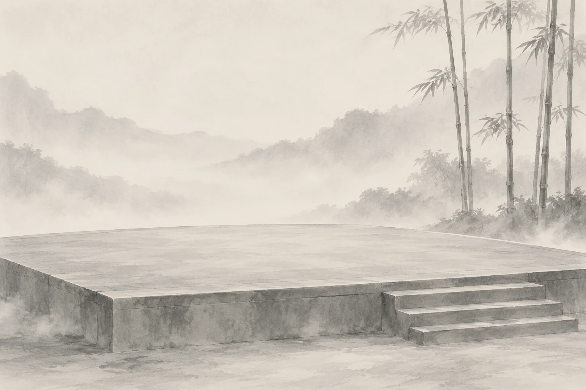

20 BP 指定對手武學
你可以指定對手的武學組合。
夜鴨爭鋒

拿走高手的慣用手段，
讓新人的本事有機會出場。

不是只找最強的人，而是讓不同程度的人，認真打一場。
百業裡有人打了幾千場論劍，也有人幾乎沒有接觸過對戰。如果只是按照原本的實力直接交手，很多比賽其實在開始以前，大家心裡就已經知道結果了。
但我們覺得，這樣有點可惜。
試鋒不是為了找出「誰最強」，也不是只有高手才有資格參加。我們更想做的，是讓不同程度的人都有理由走進場上，真正和彼此打一場。
所以我們設計了段位與「讓武」規則。實力差距越大，較低段位的一方就能取得更多 BP，限制高手原本擅長的武器、技能、操作方式，甚至改變勝利條件。
這不是要高手故意放水，也不保證較弱的一方一定能贏。高手依然要全力取勝，只是必須在更多限制之下重新想辦法；經驗較少的人，也不再只是上場等著被輾過，而是真的有機會把自己會的東西打出來。
所以，不管你是打了幾千場的老手，還是幾乎沒碰過論劍的新人，我們都希望你來。
對高手來說，這是一場把慣用手段拿走之後，看看自己還剩多少本事的挑戰；對新手來說，這是一個不用先變成高手，也能和大家一起玩的機會。
我們希望最後大家記得的，不只是誰拿了第一名，而是那些平常根本不可能出現的對局——高手被逼著用陌生的方法解題，新手第一次真的逼高手認真應戰，同門之間也因此多了一場值得笑、值得聊、甚至值得再約一次的比賽。
這就是我們想辦「百業試鋒」的原因。
不因段位拒絕任何人，也不要求任何人假裝變弱。
讓不同程度的人，都能在同一個場上，各自試試自己的鋒芒。
大會依實際 PVP 能力分段。
開山 → 斷水 → 飛花 → 無我
低段位者選擇限制，
高段位者換個方法取勝。
最終取前四。讓武配置，三局固定。
試試看 · 段位差
低段位者取得
16 BP
高段位者依配置接受限制。
開賽前公開確認配置，由裁判檢查設定。雙方全力取勝，不得放水。
六類限制 · 36 項
你可以指定對手的武學組合。
對手的武學將被裁判隨機指定。
對手的切換武器按鍵將被裁判要求移除，對手若仍能切換武器則視為違規。
雙方一律使用46級武庫的武學裝備。注意：此項對你自己同樣生效。
對手開賽前必須在設定中關閉。開打後畫面仍出現武學特效則視為違規。
對手的特殊技、武學技按鍵將被裁判要求移除，對手若仍能使用特殊技、武學技則視為違規。
對手全場無法使用任何奇術。若同時買了「禁用任意奇術」，將經裁判確認後返還禁用任意奇術的 BP。
對手的特殊技、武學技其中一個按鍵將被裁判要求移除，對手若仍能使用特殊技或武學技則視為違規。
對手只能靠技能造成傷害。攻擊鍵的基礎攻擊被裁判要求移除，對手若仍能觸發普通攻擊則視為違規。
對手的重蓄力按鍵將被裁判要求移除，對手若仍能觸發重蓄力則視為違規。
對手的處決按鍵將被裁判要求移除，對手若仍能觸發處決則視為違規。
選購時逐次寫下「哪個技能移到哪個鍵位」。
例：武學技移動到 ALT+4；太白醉月移動到 Q；手把玩家依相對應按鍵調整。
選購時逐次指定一個奇術名稱。裁判將依禁用清單要求對手移除該奇術，對手若仍能觸發該奇術則視為違規。
對手的移動鍵（預設 WASD）將被裁判要求移除，靠奇術、技能的位移不算違規。
對手將無法攜帶解控奇術上場，對手若仍能發動解控則視為違規。
對手的迴避按鍵將被要求移除，對手若仍能使用迴避則視為違規，奇術、技能的迴避效果不在此限。
對手的卸勢按鍵將被要求移除，對手若仍能使用卸勢則視為違規。
對手的防禦按鍵將被要求移除，對手若仍能使用防禦則視為違規。
對手的跳躍按鍵將被要求移除，對手若仍能使用跳躍則視為違規，奇術、技能的跳躍效果不在此限。
開局時由對手主動受擊，直到對手觸發守關元後，雙方必須脫離糾纏，接著直接進入正式決鬥。
上下左右的打亂方式由裁判隨機指定。
由你指定哪兩個鍵互換，且不限於方向鍵。
例：Q 跟 ～ 互換；W 跟 Q 互換；S 跟 ALT+4 互換。
開局時由對手主動受擊，直到對手血量明顯低於一半時，你必須主動停手並且雙方脫離糾纏，接著才進入正式決鬥。
你只要撐過90秒並且比賽沒有進入結算畫面，即判定獲勝。
你只要撐過120秒並且比賽沒有進入結算畫面，即判定獲勝。
你只要撐過180秒並且比賽沒有進入結算畫面，即判定獲勝。
時間結束時你仍沒被擊倒，即使結算為對手獲勝，仍判定你獲勝。
以對手血條掉到一半以下為準，傷害來源不限（含他自己的失誤）。「明顯」由裁判認定；若有爭議即不符合「明顯」原則，將不會判定對手落敗。
你打出對手的守關元瞬間即獲勝，不必再完成擊倒。
對手在你脫離接戰後不得向你移動接近；他可以原地防守，也可以反擊你送上門的進攻。
脫離判定：透過迴避、卸勢、處決、防禦反擊中斷對手攻勢並主動脫離戰鬥，即完成脫離。
在比賽可看性以及時間壓力上，裁判會有積極進攻的要求；若不服從裁判要求則可能被判輸。
對手只有在進行攻擊動作時可以離開角落，攻擊動作結束後必須返回。場地依九宮格劃分後的四個四方角為角落，攻擊、追擊結束時必須回到角落。
在比賽可看性以及時間壓力上，裁判會有積極進攻的要求；若不服從裁判要求則可能被判輸。
在決鬥開始前8秒，你的對手不能主動攻擊你，直到你先發動攻擊。
例：帶光頭＋沒有衣服。
開打前對手必須打字公開說一句狠話，眾人見證此話的前提下才能進入會場進行決鬥，內容不限，但不得辱罵或人身攻擊。
例：你好像很勇哦，讓我看看！
例：你輸了就要當我的俠緣。（我拒絕）
例：夜鴉所至，萬敵皆寂！
讓的是條件。
不讓求勝的心。
BP 不保證弱者獲勝，只賦予後進要求強者以更困難方式取勝的權利。
裁判將依 BP 說明進行仲裁，若有爭議則大會擁有最終解釋權。
對局待公布
待公布
待公布
示範資料 · 此比分僅供演出預覽

待揭曉

待揭曉

待揭曉
獎金、獎品與領獎方式將於定案後公布。
賽制另取殿軍；完整名次以正式賽果為準。
第 1 輪 · 第 1 場